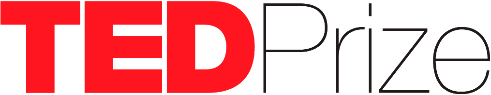

TED Prize Filmmaker Award
Request for Proposals (RFP)
For the past 20 years Charmian Gooch and her colleagues at Global Witness have been working to expose a global network of anonymous companies that enable corrupt despots to rob a country’s natural resources, fuel regional conflicts, degrade the environment and dodge billions of dollars of taxes.
For this work Charmian and Global Witness co-founders and co-directors Patrick Alley and Simon Taylor have been recognized by TED with the 2014 TED Prize Wish: “Our wish is for us to know who owns and controls companies, so that they can no longer be used anonymously against the public good. Let's ignite world opinion, change the law, and together launch a new era of openness in business.”
With TED’s support, they’re pursuing this wish by unleashing a campaign to rally people, mobilize communities, initiate investigations, and execute high-level interventions targeting governments around the world, including the US, the European Union and the G20 group of leading economies to challenge vested interests and change the system.
Sundance Institute | TED Prize Filmmaker Award is requesting proposals for short documentary films
about this year’s TED Prize winner Charmian Gooch and her TED Prize Wish.
Do you have a creative, compelling and objective way to tell the story of the pursuit of this wish? What elements or source material would you use? Would you follow the money? Follow the people most affected by this fiscal fraud? Follow the perpetrators? Or follow the crusaders committed to exposing and dismantling the infrastructure that facilitates swindling on a massive scale? Or would you take an entirely different approach? Now is your chance to bring that story to life.
ABOUT SUNDANCE INSTITUTE | TED PRIZE FILMMAKER AWARD
Sundance Institute and TED believe in the power of non-fiction storytelling, so we are continuing our joint initiative to create a short film and a multi-platform campaign around the annual TED Prize winner with the goal of raising awareness of their work.
As part of the TED Prize, Sundance Institute’s Documentary Film Program is announcing an RFP for the 2014 TED Prize Filmmaker Award. One winner will be awarded $125,000 to produce and deliver a cinematic short film. The winning filmmaker will tell the story behind the Wish for this year’s TED Prize Winner, and how progress is made towards achieving this, over the course of the year following the award of the $1 million Prize. The goal is to produce an independent cinematic short documentary film of up to 40 minutes in length and suitable to qualify for the Academy Award in the Best Documentary – Short Subject category.
In addition to delivering a film, the filmmaker must craft a plan for a multi-platform presence for the project’s content in shorter formats, including promos, a trailer and a 3-5 minute version of the film. This content will reflect the drama of the first year’s activities related to the TED Prize winner’s wish. The Award must cover the costs of qualifying the film for Academy Award consideration. The film must also be made available to Sundance Institute, TED, and the TED Prize winner for their non-exclusive use in perpetuity. The copyright will remain with the filmmakers.
Film projects must be completed within 18 months of the Award announcement, with clips to be delivered and screened at TED Vancouver 2015.
AWARD CRITERIA
- The story must create an appreciation and deeper understanding of the TED Prize winner’s work, vision, challenges and accomplishments in the context of the larger issues they are grappling with.
- The project displays directorial vision/aesthetic and has the potential for theatrical release.
- The project highlights the work of the TED Prize winner, and their cause, over the course of their first 12-18 months after receiving the award.
- Intended project length is between 25:00-40:00.
- The project is independently produced with creative control held by the producing/directing team.
FAQ
If you have additional questions about applying for the Sundance Institute | TED Filmmaker Award, click here for our FAQ.
If you have further questions, please e-mail us at dfpted@sundance.org.
HOW TO APPLY
The online application closed May 9, 2014. Decisions are expected in early June 2014.
The Sundance Documentary Film Program is part of the non-profit Sundance Institute. Sundance Institute reserves the right to solicit proposals. Details of the contract will be presented to projects that are finalists.
ABOUT THE TED PRIZE
The first TED Prize was awarded in 2005, born out of the TED Conference and a vision by the world's leading entrepreneurs, innovators, and entertainers to change the world – one wish at a time. The original prize: $100,000 and the TED community's range of talent and expertise. What began as an unparalleled experiment to leverage the resources of the TED community has evolved into a $1 million award and an ambitious effort to spur global-scale change.
From Bono's the ONE Campaign ('05 recipient) to Jamie Oliver 's Food Revolution ('10 recipient) to JR's Inside Out Project ('11 recipient) and Sugata Mitra’s School in a Cloud (’13 recipient), the TED Prize has helped to combat poverty, take on religious intolerance, improve global health, tackle child obesity, advance education, and inspire art around the world.